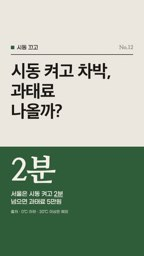

12번 영상
시동 켜고 차박, 과태료 나올까?
쿠팡 링크는 아직 준비 중이에요. 아래 비교는 지금 바로 읽을 수 있어요.
시동 끄고 잔다면 3가지 확인
서울은 시동 켜고 2분 넘으면 과태료 5만원
0℃ 이하 · 30℃ 이상은 예외
먼저 지역 규칙부터
- 지역 규칙(조례)
- ✔ 서울은 2분까지
- ⚠ 지역마다 시간이 달라요
- 25℃↑·5℃ 미만은 5분
- 시동 끈 뒤 전기
- ✔ 밤새 쓸 전기 따로 준비
- ⚠ 전기만 켜두면 방전돼요
- 차 배터리 아끼기
- 지붕 태양광 판
- ✔ 허락 없이 달 수 있어요
- ⚠ 차 폭을 넘으면 안 돼요
- 무시동 히터도 같은 분류
출처: 대기환경보전법 59조 · 서울시 조례(2025.9) · 현대·기아 설명서